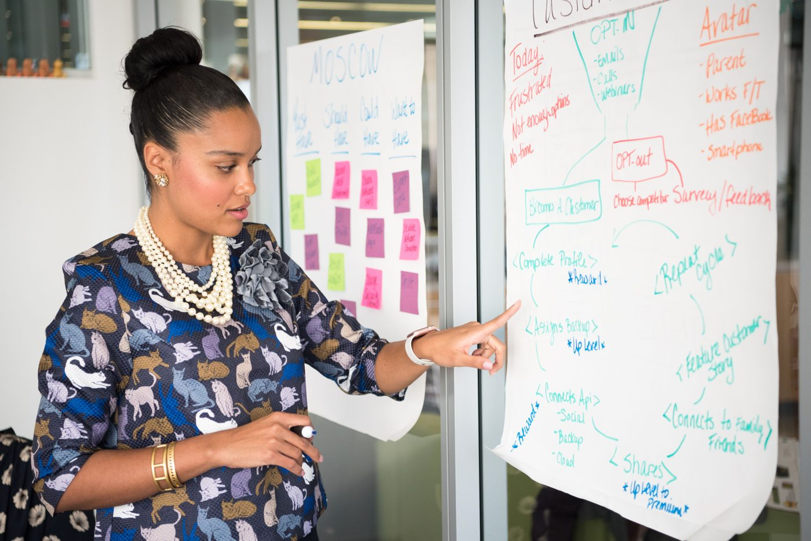

- Featured
- End-to-end BA deliverables
Business case & requirements
Summit Regional Health: Integrated Supply Chain Optimization
A hospital network was running a fragmented, manual supply chain. I built the full business case package, taking the problem from identification through financial justification to an executive sponsorship presentation.
What I delivered
- Five Case Model business case
- Business requirements document (BRD)
- As-Is / To-Be process maps
- Stakeholder register, RACI matrix and communication plan
- Executive sponsorship deck